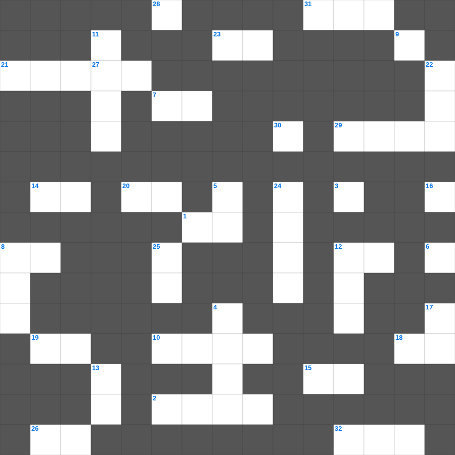

성경 사건 & 이야기 마스터 100
📌 서비스 정의
십자가로세로는 교회 주보와 주일학교에서 사용할 수 있는 성경 기반 가로세로 퍼즐 서비스입니다. 성경 인물, 사건, 핵심 구절을 바탕으로 제작되었습니다. 온라인 풀이 및 인쇄 기능을 제공합니다.
성경를 주제로 한 성경 성경퀴즈입니다. 35개의 단어를 맞춰보세요! 가로세로 낱말 퍼즐 형식으로 성경의 핵심 내용을 재미있게 복습할 수 있습니다.

📝 가로 힌트
1. 부활하신 주님이 제자들에게 숨을 내쉬며 가라사대 이것을 받으라
2. 베들레헴 이것아 너는 유다 족속 중에 작을지라도 이스라엘을 다스릴 자가 네게서 내게로 나올 것이라
3. 무엇이든지 내게 유익하던 것을 내가 그리스도를 위하여 다 이것으로 여길뿐더러
7. 바울이 빌립보서를 쓸 당시의 신분
8. 일곱째 날에 하나님이 하신 일
10. 히스기야가 깨뜨린 모세의 놋뱀 이름 (놋조각이라는 뜻)
11. 우리가 알거니와 하나님을 사랑하는 자... 모든 것이 합력하여 이것을 이루느니라
12. 하나님은 근심하는 자들을 이것하시는 분
14. 마지막 문안: 주 예수 그리스도의 이것과 하나님의 사랑과 성령의 교통하심이 너희 무리와 함께 있을지어다
15. 여호와여 주께서 내 심령의 원통함을 풀어 주셨고 내 이것을 속량하셨나이다
18. 형제 사랑에 관하여는 너희에게 쓸 것이 없음은 너희 자신이 하나님의 가르치심을 받아 서로 이것함이라
19. 모압이 어려서부터 평안하고 이것 위에서 정지하고 옮겨지지 아니함 같아서
20. 애가 전반에 흐르는 정서
21. 물에 빠진 도끼날을 떠오르게 하려고 엘리사가 던진 것
23. 버러지 같은 너 이것아, 너희 이스라엘 사람들아 두려워하지 말라
26. 오직 마음에 숨은 사람을 온유하고 안정한 심령의 썩지 아니할 것으로 하라 이는 하나님 앞에 이것한 것이니라
27. 누가 이 편지에 한 우리 말을 순종하지 아니하거든 그 사람을 이것하여 사귀지 말고 그로 하여금 부끄럽게 하라
29. 베드로가 밤새 그물을 던졌으나 잡지 못했을 때 하신 일
31. 바울이 자신들의 부재 중에 데살로니가 성도들의 믿음을 굳건하게 하기 위해 보낸 사람
32. 기약이 이르면 하나님이 그의 나타나심을 보이시리니 하나님은 복되시고 유일하신 이것이시며
📝 세로 힌트
4. 디모데의 고향
5. 너희 몸은 너희가 하나님께로부터 받은 바 너희 가운데 계신 이것의 전인 줄을 알지 못하느냐
6. 사망아 너의 승리가 어디 있느냐 사망아 네가 쏘는 것이 어디 있느냐 사망이 쏘는 것은 이것이요
8. 베드로의 형제, 예수님의 첫 제자
9. 곧 곤고한 날이 이르기 전, 나는 아무 이것이 없다고 할 해들이 가깝기 전에
11. 여호사밧 왕이 백성들에게 신뢰하라고 강조한 대상
12. 만물이 그에게서 창조되되 하늘과 땅에서 보이는 것들과 보이지 않는 것들과... 다 그로 말미암고 그를 이것 창조되었고
13. 베드로의 그림자라도 덮이기를 바랐던 사람들이 병든 자를 메고 나온 곳
16. 성전 완공 후 낙성식 때 하늘에서 내려와 제물을 사른 것
17. 지식은 교만하게 하며 이것은 덕을 세우나니
22. 곤충 중 뛸 수 있는 다리가 있어 먹을 수 있는 것
24. 바울이 사탄에게 내준 인물들 중 하나: 후메내오와 이것
25. 내 사랑하는 자가 문틈으로 손을 들이밀매 내 이것이 동하여서
28. 큰 집에는 금 그릇과 은 그릇뿐 아니라 나무 그릇과 이것 그릇도 있어
30. 노아의 아들 중 저주를 받은 자의 아버지
📖 함께 읽으면 좋은 성경사전
퍼즐을 풀기 전에 읽으면 힌트가 쉬워지고, 풀고 나서 읽으면 내용을 한 번 더 복습할 수 있습니다.
🧩 이 퍼즐에서 배우는 내용
이 퍼즐은 성경 사건 & 이야기 마스터 100의 핵심 단어와 개념을 자연스럽게 복습할 수 있도록 구성되었습니다. 주일학교 수업이나 개인 성경공부에서 학습 내용을 점검하는 용도로 바로 활용할 수 있습니다.
🧑🏫 교회 교육 자료 활용
이 퍼즐은 주일학교 교재 추천 자료로 활용할 수 있고, 주일학교 주보에 넣기 좋은 분량으로 구성되어 있습니다. 수업용 주일학교 교안에 활동지로 붙이거나, 예배 후 복습용 주일학교 공과교재로 바로 사용할 수 있습니다.
🏷️ 키워드
성경 성경퀴즈, 성경, 십자가로세로, 성경퀴즈, 말씀퀴즈, 가로세로퍼즐, 주일학교 교재 추천, 주일학교 주보, 주일학교 교안, 주일학교 공과교재